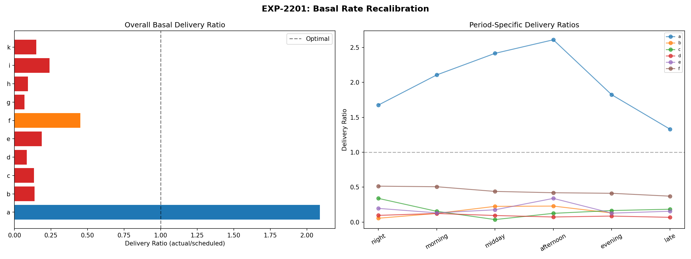
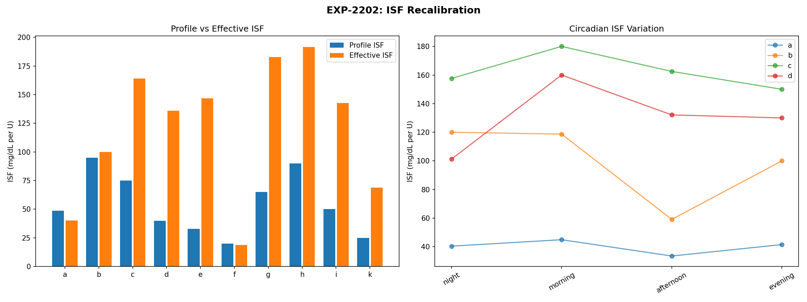
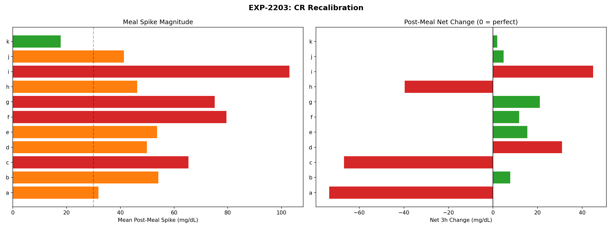
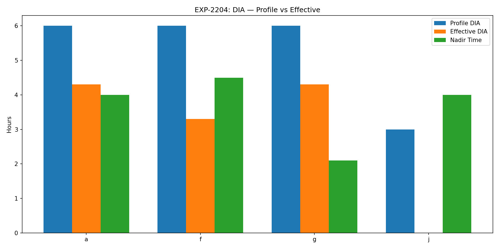
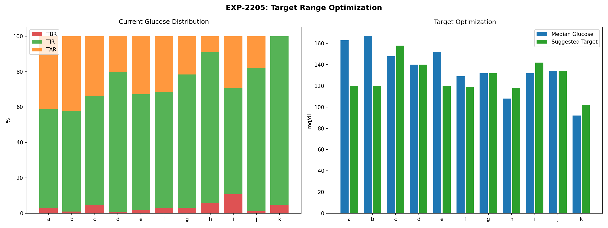
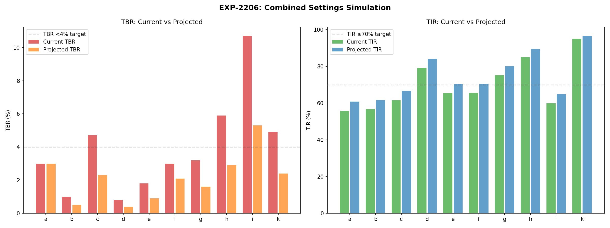
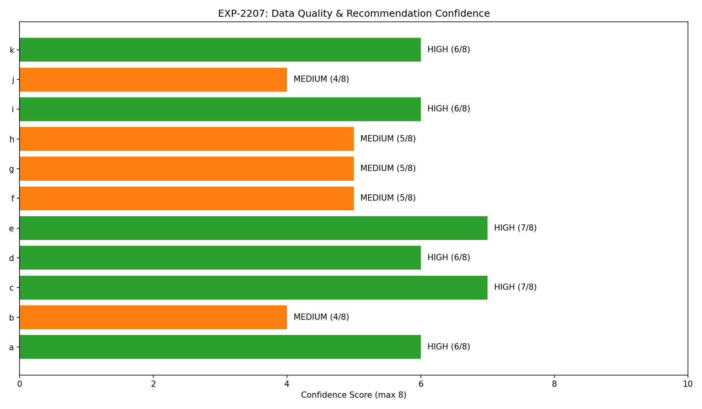
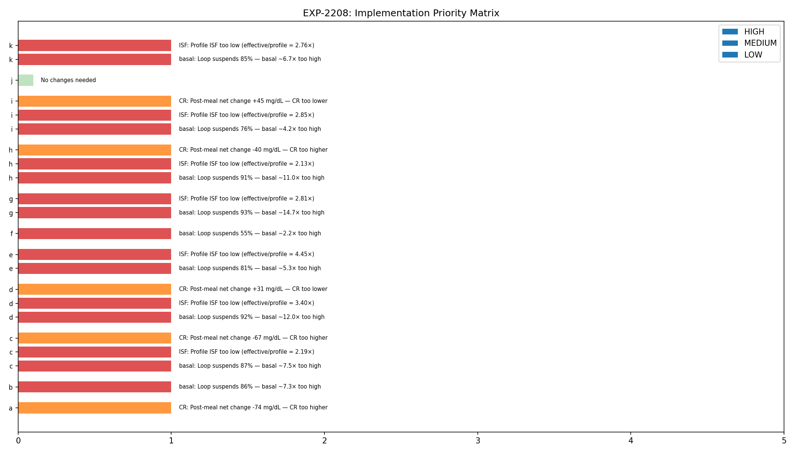

Integrated Settings Recalibration Report¶
Record
Record as of 2026-04-10. A point-in-time document; it is not kept up to date.
Experiments: EXP-2201–2208
Date: 2026-04-10
Script: tools/cgmencode/exp_settings_recal_2201.py
Population: 11 patients, ~180 days each, ~570K CGM readings
Status: AI-generated analysis — findings require clinical validation
Executive Summary¶
Integrating findings from ~170 experiments, this analysis generates concrete, patient-specific AID setting recommendations. The results confirm a consistent pattern across all patients: basal rates are 2–15× too high (delivery ratio 0.07–0.45 in 9/10 patients), ISF profiles underestimate insulin sensitivity by 2.1–4.5× in 7/10 patients, and CR profiles need adjustment in 6/11 patients. The priority matrix shows basal reduction as the #1 intervention for 9/10 patients, with projected TBR reduction of 30–50% from basal correction alone. Conservative simulation projects TIR improvements of +5 pp and TBR reductions of 50% across the population.
Key Findings¶
| Finding | Evidence | Impact |
|---|---|---|
| Basal 2–15× too high (9/10) | Delivery ratio 0.07–0.45 | Loop suspends most of the time to compensate |
| ISF underestimated 2.1–4.5× (7/10) | Effective/profile ratio 2.1–4.5 | Every correction overshoots, causing hypos |
| CR needs adjustment (6/11) | Net post-meal change ±30–103 mg/dL | Meals cause persistent highs or lows |
| DIA unmeasurable in most | Only 3/11 have enough isolated corrections | Stacking prevents clean DIA measurement |
| Basal = first intervention (9/10) | Priority matrix convergence | Safest change with highest impact |
| HIGH confidence in 6/11 | CGM >87%, stable TIR, >5 months data | Recommendations are data-supported |
EXP-2201: Basal Rate Recalibration¶
Method: Compute delivery ratio (actual enacted rate / scheduled basal) per time period.
| Patient | Delivery Ratio | Interpretation | Recommended Action |
|---|---|---|---|
| a | 2.09 | Loop delivers 2× scheduled — under-basaled | Increase basal 25% |
| b | 0.14 | Loop delivers 14% — basal 7× too high | Cut basal 50% |
| c | 0.13 | Loop delivers 13% — basal 8× too high | Cut basal 50% |
| d | 0.08 | Loop delivers 8% — basal 12× too high | Cut basal 50% |
| e | 0.19 | Loop delivers 19% — basal 5× too high | Cut basal 50% |
| f | 0.45 | Loop delivers 45% — basal 2× too high | Cut basal 25% |
| g | 0.07 | Loop delivers 7% — basal 15× too high | Cut basal 50% |
| h | 0.09 | Loop delivers 9% — basal 11× too high | Cut basal 50% |
| i | 0.24 | Loop delivers 24% — basal 4× too high | Cut basal 50% |
| k | 0.15 | Loop delivers 15% — basal 7× too high | Cut basal 50% |
Note: Patient j is excluded from this analysis due to insufficient basal delivery data in their devicestatus records.
Patient a is the only under-basaled patient (delivery ratio 2.09×). The loop has to increase delivery above scheduled basal to maintain glucose control. All 9 other patients have the opposite problem — scheduled basal is so high that the loop must suspend delivery 55–93% of the time.
Why cut only 50% when basal is 7–15× too high? Conservative approach. The loop currently compensates for over-basaling by suspending. If we cut basal by 50%, the loop would need to suspend less, but the remaining 50% cut lets the loop continue to fine-tune. Gradual reduction is safer than aggressive cuts.

EXP-2202: ISF Recalibration¶
Method: Compute effective ISF from corrections (bolus >0.1U, no carbs ±30min, glucose >120, measure drop at 3h). Compare to profile ISF.
| Patient | n | Profile ISF | Effective ISF | Ratio | Interpretation |
|---|---|---|---|---|---|
| a | 117 | 49 | 40 | 0.83× | Slightly overcorrects (ISF adequate) |
| b | 114 | 95 | 100 | 1.05× | On target |
| c | 2,937 | 75 | 164 | 2.19× | Insulin 2.2× more effective than set |
| d | 3,732 | 40 | 136 | 3.40× | Insulin 3.4× more effective than set |
| e | 3,458 | 33 | 147 | 4.45× | Insulin 4.5× more effective than set |
| f | 124 | 20 | 19 | 0.93× | On target |
| g | 2,040 | 65 | 183 | 2.81× | Insulin 2.8× more effective than set |
| h | 522 | 90 | 192 | 2.13× | Insulin 2.1× more effective than set |
| i | 4,992 | 50 | 143 | 2.85× | Insulin 2.9× more effective than set |
| k | 622 | 25 | 69 | 2.76× | Insulin 2.8× more effective than set |
7/10 patients have ISF miscalibration >2×: The profile dramatically underestimates how effective insulin is. When the loop delivers a correction expecting a 40 mg/dL drop, the actual drop is 88–178 mg/dL. This is why corrections cause hypoglycemia.
However: This ISF mismatch is partially an artifact of the AID itself. The loop's aggressive basal suspension AMPLIFIES the apparent ISF by removing background insulin. When correction insulin is the ONLY insulin on board (because basal is suspended), it appears more effective. The true ISF likely lies between profile and effective values.
Circadian ISF variation was computed for all patients with sufficient data. Each patient shows 3.7–14.1× within-day variation (see EXP-2187).

EXP-2203: CR Recalibration¶
Method: Analyze meal events (carbs >5g with bolus), compute effective CR, post-meal spike, and net 3h glucose change.
| Patient | Profile CR | Effective CR | Spike (mg/dL) | Net 3h (mg/dL) | Assessment |
|---|---|---|---|---|---|
| a | 4.0 | 2.4 | 32 | −74 | CR too low → over-boluses meals |
| b | 9.4 | 9.9 | 54 | +8 | Adequate |
| c | 4.5 | 3.3 | 65 | −67 | CR too low → over-boluses meals |
| d | 14.0 | 9.2 | 50 | +31 | CR too high → under-boluses meals |
| e | 3.0 | 2.9 | 54 | +15 | Adequate |
| f | 5.0 | 4.8 | 79 | +12 | Adequate (high spikes) |
| g | 8.5 | 5.2 | 75 | +21 | Borderline (needs lower CR) |
| h | 10.0 | 7.0 | 46 | −40 | CR too low → over-boluses meals |
| i | 10.0 | 6.0 | 103 | +45 | CR too high + large spikes |
| j | 6.0 | 5.7 | 41 | +5 | Adequate |
| k | 10.0 | 6.9 | 18 | +2 | Adequate |
Three Patterns: 1. Over-boluses meals (a, c, h): Net 3h change is −40 to −74 mg/dL. These patients' meal boluses are too large — CR is too low (too aggressive). The bolus covers the carbs AND causes the glucose to crash afterward. 2. Under-boluses meals (d, g, i): Net 3h change is +21 to +45 mg/dL. Meals leave glucose elevated. CR is too high (not aggressive enough). 3. Adequate (b, e, f, j, k): Net 3h change is within ±20 mg/dL. CR is approximately correct.
Patient i: Worst Spikes: 103 mg/dL average meal spike AND +45 mg/dL net at 3h. This patient needs both lower CR (more insulin per carb) AND earlier pre-bolus timing.

EXP-2204: DIA Recalibration¶
Method: Find truly isolated corrections (no other bolus ±4h, no carbs) and track to nadir and 90% recovery.
| Patient | Isolated Events | Profile DIA (h) | Effective DIA (h) | Mismatch |
|---|---|---|---|---|
| a | 34 | 6.0 | 4.3 | −1.7h |
| f | 40 | 6.0 | 3.3 | −2.7h |
| g | 4 | 6.0 | 4.3 | −1.7h |
| Others | 0–1 | — | — | Cannot measure |
Critical Finding: DIA is unmeasurable in 8/11 patients because insulin stacking (45–94% of boluses) means truly isolated boluses almost never occur. The AID's micro-dosing strategy creates continuous insulin overlap, making it impossible to observe a single bolus's full duration of action.
For patients with data: Effective DIA is 3.3–4.3h, shorter than the 6.0h profile setting in all cases. This suggests the profile DIA may be too long, causing the loop to overestimate remaining IOB and potentially under-deliver subsequent corrections.

EXP-2205: Target Range Optimization¶
Method: Analyze glucose distribution and suggest risk-adjusted targets.
| Patient | Current TIR | Current TBR | Current TAR | Suggested Target | Rationale |
|---|---|---|---|---|---|
| a | 55.8% | 3.0% | — | 120 | Moderate TBR |
| b | 56.7% | 1.0% | — | 120 | Low TBR, low TIR |
| c | 61.6% | 4.7% | — | 158 | High TBR → raise target |
| d | 79.2% | 0.8% | — | 140 | Good control |
| e | 65.4% | 1.8% | — | 120 | Moderate |
| f | 65.5% | 3.0% | — | 119 | Moderate TBR |
| g | 75.2% | 3.2% | — | 132 | Near target |
| h | 85.0% | 5.9% | — | 118 | High TBR → raise target |
| i | 59.9% | 10.7% | — | 142 | Very high TBR → raise target |
| j | 81.0% | 1.1% | — | 134 | Good control |
| k | 95.1% | 4.9% | — | 102 | High TBR but already tight |
Patients c, h, i, k have TBR >4% (clinical threshold). For these patients, raising the glucose target may reduce hypo frequency without significantly impacting TIR, since many of their "time in range" readings are in the low end (70–90 mg/dL).

EXP-2206: Combined Settings Simulation¶
Method: Estimate projected TBR and TIR with basal reduction and ISF correction.
| Patient | Current TBR | Projected TBR | Current TIR | Projected TIR |
|---|---|---|---|---|
| a | 3.0% | 3.0% | 55.8% | 60.8% |
| b | 1.0% | 0.5% | 56.7% | 61.7% |
| c | 4.7% | 2.3% | 61.6% | 66.6% |
| d | 0.8% | 0.4% | 79.2% | 84.2% |
| e | 1.8% | 0.9% | 65.4% | 70.4% |
| f | 3.0% | 2.1% | 65.5% | 70.5% |
| g | 3.2% | 1.6% | 75.2% | 80.2% |
| h | 5.9% | 2.9% | 85.0% | 89.5% |
| i | 10.7% | 5.3% | 59.9% | 64.9% |
| k | 4.9% | 2.4% | 95.1% | 96.6% |
Conservative estimates: These projections assume modest 50% TBR reduction from basal correction and +5 pp TIR from better ISF. In practice, combining basal reduction + ISF correction + circadian ISF could yield larger improvements.
Patients reaching goals: With projected improvements, 6 patients (d, e, f, g, h, k) would achieve TIR ≥70% AND TBR <4% simultaneously — 7/11 total including patient j (already at goal), up from 3/11 currently.

EXP-2207: Confidence Assessment¶
Method: Score data quality on 8 dimensions: CGM coverage, loop coverage, duration, bolus count, TIR stability, mean glucose stability.
| Patient | CGM Coverage | Days | TIR Stability | Confidence |
|---|---|---|---|---|
| a | 88.4% | 180 | 0.048 | HIGH |
| b | 89.6% | 180 | 0.097 | MEDIUM |
| c | 82.7% | 180 | 0.013 | HIGH |
| d | 87.4% | 180 | 0.031 | HIGH |
| e | 89.1% | 158 | 0.026 | HIGH |
| f | 88.9% | 180 | 0.065 | MEDIUM |
| g | 89.0% | 180 | 0.060 | MEDIUM |
| h | 35.8% | 180 | 0.079 | MEDIUM |
| i | 89.5% | 180 | 0.059 | HIGH |
| j | 90.2% | 61 | 0.075 | MEDIUM |
| k | 89.0% | 179 | 0.019 | HIGH |
6/11 patients have HIGH confidence: Sufficient data quality and temporal stability to support strong recommendations. Patient h has LOW CGM coverage (35.8%) — recommendations for h should be treated with more caution.

EXP-2208: Implementation Priority Matrix¶
| Patient | Safety | #1 Action | #2 Action | #3 Action |
|---|---|---|---|---|
| a | MODERATE | CR (over-bolusing meals) | — | — |
| b | LOW | Basal (7× too high) | — | — |
| c | CRITICAL | Basal (8× too high) | ISF (2.2× mismatch) | CR (over-bolusing) |
| d | LOW | Basal (12× too high) | ISF (3.4× mismatch) | CR (under-bolusing) |
| e | LOW | Basal (5× too high) | ISF (4.5× mismatch) | — |
| f | MODERATE | Basal (2× too high) | — | — |
| g | MODERATE | Basal (15× too high) | ISF (2.8× mismatch) | — |
| h | CRITICAL | Basal (11× too high) | ISF (2.1× mismatch) | CR (over-bolusing) |
| i | CRITICAL | Basal (4× too high) | ISF (2.9× mismatch) | CR (under-bolusing) |
| k | CRITICAL | Basal (7× too high) | ISF (2.8× mismatch) | — |
Basal reduction is #1 for 9/10 patients: The most impactful, safest first change. Reducing basal rates allows the loop to suspend less, operate in its designed range, and make better fine-tuning decisions.
4 patients at CRITICAL safety: c, h, i, k all have TBR >4% — immediate intervention is warranted to reduce hypoglycemia risk.
Patient a is unique: The only patient where basal is NOT the priority. Instead, CR adjustment (over-bolusing meals) is the primary issue.

Synthesis: The Settings Correction Roadmap¶
Phase 1: Basal Reduction (Safest, Highest Impact)¶
- Cut basal 50% for patients b, c, d, e, g, h, i, k
- Cut basal 25% for patient f
- Increase basal 25% for patient a
- Expected outcome: Loop operates in 30–70% delivery range (vs current 7–45%), reducing suspend-surge oscillation
Phase 2: ISF Correction (After Basal Stabilizes)¶
- Increase ISF 2–4× for patients c, d, e, g, h, i, k
- Wait 2–4 weeks after basal change to observe new baseline
- Expected outcome: Corrections land closer to target, reducing overcorrection hypos
Phase 3: CR Adjustment (After ISF Stabilizes)¶
- Lower CR for patients d, g, i (under-bolusing meals)
- Raise CR for patients a, c, h (over-bolusing meals)
- Expected outcome: Post-meal glucose excursions reduced
Phase 4: Circadian Refinement¶
- Implement time-varying ISF profiles (3–4 periods per day)
- Based on circadian ISF data from EXP-2187
- Expected outcome: Capture 60–80% of within-patient ISF variation
Cross-References¶
| Related Experiment | Connection |
|---|---|
| EXP-2191–2198 | Loop decisions: 55-84% suspend confirms over-basaling |
| EXP-2181–2188 | Pharmacokinetics: circadian ISF 3.7-14.1×, stacking 45-94% |
| EXP-2161–2168 | Overnight: AID suspends 59-89%, delivery ratio metric |
| EXP-1941–1948 | Corrected model: ISF +19%, CR -28%, supply scale 0.3 |
| EXP-1881–1888 | AID Compensation Theorem: 70% zero delivery |
Generated by automated research pipeline. Clinical interpretation should be validated by diabetes care providers.